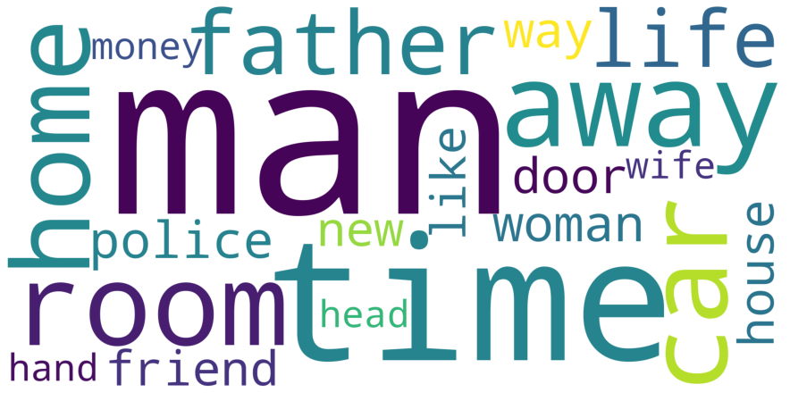

k-Means synopsis based movie clustering
In the first semester of my master studies I took a course in Natural Language Processing. My exam performance was to work on a project that dealt with natural language processing. My project partner and I decided to investigate the use of NLP in a real business use case. Since I'm a big fan of movies, we wanted to use natural language to emulate a feature of streaming services. We needed a large amount of textual data of many movies as a data base. We finally wanted to research if it is possible to cluster movies based on their story using textual data as suggest similar movies within a cluster.
We have divided our project into four sections, which I would like to explain in more detail below.
# Crawling
My project partner was responsible for crawling data. We used IMDB's film
database, specifically the 250 best
rated films, as a data basis. My project partner has
written an algorithm that crawls all movies in this list and writes important information
into a JSON file. We cralwed the name of a film, its synopsis and some more meta data. We
used Scrapy as a Python module for crawling websites and links. I won't go into
detail
here because my project partner did most of the work. The resulting JSON file looked like
the following data structure.
[
{
"title": "The Shawshank Redemption",
"date": "1994",
"rank": "1",
"synopsis": "In 1947, Andy Dufresne ...",
},
...
]
# Validation
After crawling the data, it was necessary to validate the data to ensure its
correctness. For this purpose I performed an analysis of the data and made first tests to
process the data. From then on we used the module Pandas as data structure,
which gave us a
lot of possibilities to analyze and process the data. After all data entries of the JSON
file were successfully transferred into a Pandas DataFrame, further information concerning
the data could be obtained. For example, 13 movies had to be removed because they did not
contain a summary of the content. It was also interesting to note that each summary of a
movie
had an average of 2030 tokens. Here all punctuation marks and stop words etc. were included.
These included information irrelevant for movie plots.
Removing the punctuation marks, stop words, named entities and verbs could reduce the data
by 76 %. The average
number of tokens was then 502. A
reduction of the tokens also allowed a reduction of the
standard deviation of the word count from 1792 to 436.
Raw tokens per movie
Processed tokens per movie
An analysis of the most frequently used words was also conducted. In the following picture the 20 most frequently used words of all processed films are visualized. Interestingly, men are mentioned significantly more often than women, for example. In addition to the processed film data, all raw data was examined as well as proper names, places, etc.
# Processing
After analyzing the data and trying out modules for processing the data, all
films were processed uniformly in order to obtain only content-relevant information/tokens.
In the following code snippet is my final algorithm for preprocessing all movie synopsis
data with the NLP module spaCy. This approach gave us the best results too. We
only use nouns and adjectives as
plot relevant information. Verbs, proper names are typically to genereal in its basic form
and stopp
words or punctuation didn't contain plot relevant information.
for index, movie in data.iterrows():
processed_data.append({'title': movie['title'],
'bow': ' '.join([str(token.lemma_).lower()
for token in nlp(movie['synopsis']) if
not token.ent_type_ and not token.is_stop and
not token.is_punct and token.pos_ != 'VERB'])})
data = pd.DataFrame(processed_data)
For this I iterate through the Pandas DataFrame of the raw film data. For each film I create a new DataFrame entry, which contains a bag of words of relevant tokens. With the help of Python's list comprehension all tokens of a movie summary are appended to a list, which are not proper names, stop words, punctuation marks and verbs. For example "The Shawshank Redemption"s bag of words now contains only words like: banker, wife, lover, golf, pro, state, death, penalty ...
# Clustering
Before a cluster analysis could be performed, it was necessary to convert all data into a suitable form for the input of the algorithm. For this purpose I created a feature matrix, where each movie's data contained a vector of all unique words of all movie summaries and. For each word the frequency of use is stored in the respective summary by means of the inverse-document-frequency. We get 237 film entries with 196 normalized frequencies of the tokens/words each.
As cluster algorithm a k-Means algorithm from Scikit-Learn was
used. In a test
run the algorithm was executed for 2 to n - 1 clusters. With the help of a metric, the
within-cluster sum-of-squares, it was evaluated which number of clusters would allow a
reasonable distribution. A final number of 7 clusters was chosen. The most relevant tokens
for the allocation to a cluster as well as some associated movies are shown below.
Cluster 0:
- life, film, wife, husband, time, friend, relationship, story, love, letter, book, child, son, mother, young
- Anand, Casablanca, The Intouchables, Avengers: Endgame, The Hunt, Good Will Hunting, American Beauty, Eternal Sunshine of the Spotless Mind, Witness for the Prosecution, Life Is Beautiful
Cluster 1:
- father, school, boy, parent, mother, home, letter, friend, child, new, family, time, daughter, life, train
- 12 Angry Men, Forrest Gump, Grave of the Fireflies, Cinema Paradiso, Whiplash, 3 Idiots, Dangal, Once Upon a Time in America, Amélie, Children of Heaven
Cluster 2:
- apartment, girl, fight, door, room, home, man, car, house, away, gun, head, woman, face, time
- Pulp Fiction, Fight Club, Léon: The Professional, Joker, The Shining, The Lives of Others, Rear Window, Snatch, Toy Story, Toy Story 3
Cluster 3:
- family, house, father, police, business, man, son, car, dead, war, home, local, member, daughter, gun
- The Godfather, The Godfather: Part II, Goodfellas, The Pianist, Coco, Parasite, Drishyam, Hotel Rwanda, Gran Torino, Gangs of Wasseypur
Cluster 4:
- man, guard, town, woman, soldier, time, away, room, wife, black, life, gun, prison, people, brother
- The Shawshank Redemption, Schindler's List, The Good, the Bad and the Ugly, Once Upon a Time in the West, American History X, The Prestige, Django Unchained, Memento, Princess Mononoke, Oldboy
Cluster 5:
- car, police, man, money, room, house, time, home, phone, away, mother, job, wife, officer, father
- The Dark Knight, Inception, Psycho, Back to the Future, Terminator 2: Judgment Day, The Usual Suspects, The Departed, It's a Wonderful Life, The Dark Knight Rises, Andhadhun
Cluster 6:
- soldier, battle, war, son, man, attack, officer, fire, power, father, city, force, time, group, hand
- The Lord of the Rings: The Return of the King, The Lord of the Rings: The Fellowship of the Ring, Hamilton, The Lion King, Gladiator, Seven Samurai, Avengers: Infinity War, Spider-Man: Into the Spider-Verse, Raiders of the Lost Ark, WALL·E
The results of this cluster analysis should now be used to make a prediction of similar titles. This functionality is modelled on the recommendation of similar titles for further viewing, as known from Netflix, for example. I used the cosine similarity to determine the similarity of movies based on their bag of words. Only films of one cluster were compared to each other. Since all movies still have the same amount of tokens, a min-max normalization was applied to distinguish differences in similarities more clearly. For example, a user who has seen Inception will next receive The Truman Show as a suggestion, because it has a normalized similarity of 93,4 %. This makes sense since both movies describe simulations of reality.
A more detailed elaboration of the procedure and the results can be found in the Jupyter notebooks of this projects Github repository. Caution: They were written in german.
Type
Master studies lecture
Tools
Python, Scrapy, spaCy, Pandas, Numpy, Scikit-learn, Matplotlib
Partners
Tim Weise
Date
2020-09-15
Source